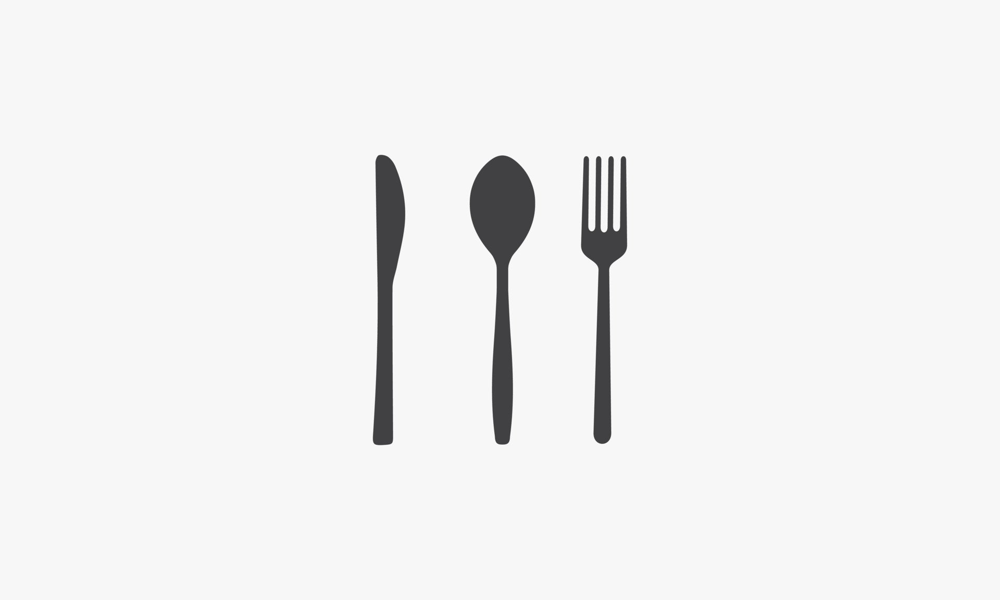

Herkesin kolaylıkla yapabileceği lezzetli bir sufle tarifi.
Video tarifi için link tıkla
4-6 Kişilik Hazırlık süresi : 15 dk Pişirme süresi: 10 dk
Sufle İçin Gerekli Malzemeler
3 tane yumurta (yumurtalar büyükse 2 tane kullanabilirsiniz)
80 gram bitter çikolata
Yarım su bardağı un
50 gram tereyapı
Yarım su bardağı şeker (biz çok tatlı sevmediğimiz için 3 yemek kaşığı kadar kullandık)
1 çimdik tuz
Sufle Tarifi Nasıl Yapılır ?
Çikolatalı sufle yapmaya başlamadan önce İlk olarak fırını 220 derecede çalıştırın.
Tereyağı ve bitter çikolataları teflon tavada kısık ateşte karıştırarak eritin. Eridikten sonra ocağı kapatarak unu ilave edin ve iyice karıştırın.
Ayrı bir kapta yumurta ve şekeri karışım beyazlayana kadar çırpın. Şeker tadının ön plana çıkması için tuzu ekleyip çırpın.
Çikolatalı harcı ilave ederek mikserle tekrar çırpın. Hamurumuz hazır.
Sufle kaplarınızı ya da ısıya dayanıklı küçük kaplarınız varsa içlerini yağlayarak hamurdan eşit şekilde hepsine paylaştırın. Yaklaşık 4 kap çıkıyor.
Daha önceden fansız çalıştırdığınız ve ısıttığınız fırında 7-8 dk da sufleniz hazır. Fırından aldıktan sonra bir kaç dakika ilk sıcaklığının geçmesini bekleyin sonra ister tabağa çevirip ister kaseden yiyebilirsiniz.
Kabınızı yağlamışsanız yapışmayacaktır. Folyodan sufle kapları var onları da kullanabilirsiniz, onlarda da suflenin çok rahat çıktığını göreceksiniz.